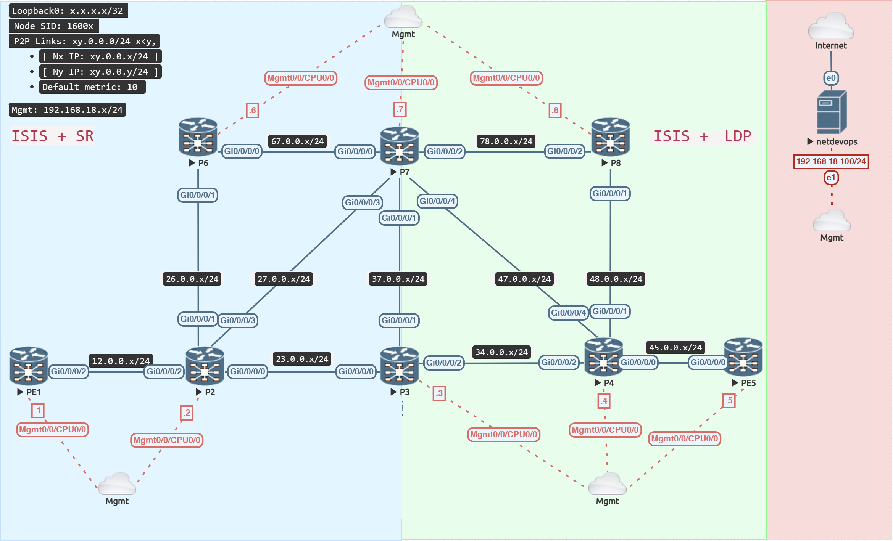

SR - LDP Interworking

As we've shown in earlier sections, SR and LDP can coexist. With sr-prefer enabled, if an SR labelled path exists, use it; otherwise, use an LDP labelled path for a specific destination.
The next step is to transition traffic between SR-only and LDP-only domains.
SR & LDP Domains
Except for the border routers, P3 and P7, remove LDP from the left part of the topology.
Verify
Failure
Because there is no end-to-end LDP, a traceroute from PE1 to PE5 would no longer operate. Label stitching is required to switch the traffic between the two domains.
RP/0/RP0/CPU0:PE1#traceroute mpls ipv4 5.5.5.5/32
Wed Feb 1 06:15:47.515 UTC
Tracing MPLS Label Switched Path to 5.5.5.5/32, timeout is 2 seconds
Codes: '!' - success, 'Q' - request not sent, '.' - timeout,
'L' - labeled output interface, 'B' - unlabeled output interface,
'D' - DS Map mismatch, 'F' - no FEC mapping, 'f' - FEC mismatch,
'M' - malformed request, 'm' - unsupported tlvs, 'N' - no rx label,
'P' - no rx intf label prot, 'p' - premature termination of LSP,
'R' - transit router, 'I' - unknown upstream index,
'X' - unknown return code, 'x' - return code 0
Type escape sequence to abort.
0 0.0.0.0 MRU 0 [No Label]
Q 1 *
RP/0/RP0/CPU0:PE1#
Stitch LDP to SR
LDP to SR label swap
This aspect is straightforward with the Cisco IOS-XR architecture, and the border router between the two domains handles it automatically.
LDP labels are used for traffic coming from the LDP domain since LDP creates a label for each route in the routing table. The border router utilises the SR label to forward traffic in the SR domain.
Verify
LRP/0/RP0/CPU0:PE5#traceroute mpls ipv4 1.1.1.1/32
Wed Feb 1 06:16:47.175 UTC
Tracing MPLS Label Switched Path to 1.1.1.1/32, timeout is 2 seconds
Codes: '!' - success, 'Q' - request not sent, '.' - timeout,
'L' - labeled output interface, 'B' - unlabeled output interface,
'D' - DS Map mismatch, 'F' - no FEC mapping, 'f' - FEC mismatch,
'M' - malformed request, 'm' - unsupported tlvs, 'N' - no rx label,
'P' - no rx intf label prot, 'p' - premature termination of LSP,
'R' - transit router, 'I' - unknown upstream index,
'X' - unknown return code, 'x' - return code 0
Type escape sequence to abort.
0 45.0.0.5 MRU 1500 [Labels: 24013 Exp: 0]
L 1 45.0.0.4 MRU 1500 [Labels: 24014 Exp: 0] 17 ms
L 2 34.0.0.3 MRU 1500 [Labels: 16001 Exp: 0] 13 ms // (1)
L 3 23.0.0.2 MRU 1500 [Labels: implicit-null Exp: 0] 13 ms
! 4 12.0.0.1 37 ms
RP/0/RP0/CPU0:PE5#
- LDP Label 24014 stitched to SR Label 16001
P4 routed traffic via the LDP label to P3, which delivered it via the SR label across the SR domain.
To route traffic to PE1, P3 swaps an incoming LDP label with an outgoing SR label 16001.
Let's take a look at the label forwarding table and the cef entry on P3.
P3 is utilising SR labels to route traffic for prefix 1.1.1.1/32; traffic arriving with SR labels as well as LDP labels now has an SR outgoing label. P3 copied the SR label for 1.1.1.1/32 to the unlabeled LDP outgoing label.
RP/0/RP0/CPU0:P3#show cef 1.1.1.1/32
Wed Feb 1 06:19:10.431 UTC
1.1.1.1/32, version 144, labeled SR, internal 0x1000001 0x8310 (ptr 0xe6a41e0) [1], 0x600 (0xd944f08), 0xa28 (0xeb60968)
Updated Feb 1 06:10:11.114
remote adjacency to GigabitEthernet0/0/0/0
Prefix Len 32, traffic index 0, precedence n/a, priority 1
gateway array (0xd7ad8d8) reference count 3, flags 0x68, source rib (7), 1 backups
[2 type 5 flags 0x8401 (0xebae128) ext 0x0 (0x0)]
LW-LDI[type=5, refc=3, ptr=0xd944f08, sh-ldi=0xebae128]
gateway array update type-time 1 Feb 1 06:10:11.115
LDI Update time Feb 1 06:10:11.115
LW-LDI-TS Feb 1 06:10:11.115
via 23.0.0.2/32, GigabitEthernet0/0/0/0, 12 dependencies, weight 0, class 0 [flags 0x0]
path-idx 0 NHID 0x0 [0xf399a10 0x0]
next hop 23.0.0.2/32
remote adjacency
local label 16001 labels imposed {16001} // (1)
Load distribution: 0 (refcount 2)
Hash OK Interface Address
0 Y GigabitEthernet0/0/0/0 remote
RP/0/RP0/CPU0:P3#
RP/0/RP0/CPU0:P3#show mpls forwarding prefix 1.1.1.1/32
Wed Feb 1 06:19:12.950 UTC
Local Outgoing Prefix Outgoing Next Hop Bytes
Label Label or ID Interface Switched
------ ----------- ------------------ ------------ --------------- ------------
16001 16001 SR Pfx (idx 1) Gi0/0/0/0 23.0.0.2 0
RP/0/RP0/CPU0:P3#
RP/0/RP0/CPU0:P3#show mpls ldp forwarding 1.1.1.1/32
Wed Feb 1 06:19:14.431 UTC
Codes:
- = GR label recovering, (!) = LFA FRR pure backup path
{} = Label stack with multi-line output for a routing path
G = GR, S = Stale, R = Remote LFA FRR backup
E = Entropy label capability
Prefix Label Label(s) Outgoing Next Hop Flags
In Out Interface G S R E
--------------- ------- -------------- ------------ ------------------- -------
1.1.1.1/32 24014 Unlabelled Gi0/0/0/0 23.0.0.2 // (2)
Unlabelled Gi0/0/0/1 37.0.0.7 (!)
RP/0/RP0/CPU0:P3#
RP/0/RP0/CPU0:P3#show mpls forwarding labels 24014
Wed Feb 1 06:19:17.188 UTC
Local Outgoing Prefix Outgoing Next Hop Bytes
Label Label or ID Interface Switched
------ ----------- ------------------ ------------ --------------- ------------
24014 16001 1.1.1.1/32 Gi0/0/0/0 23.0.0.2 240 // (3)
RP/0/RP0/CPU0:P3#
RP/0/RP0/CPU0:P3#show cef mpls local-label 24014 eOS detail
Wed Feb 1 06:19:45.214 UTC
Label/EOS 24014/1, Label-type Unknown, version 97, labeled SR, internal 0x1000001 0x87f0 (ptr 0xdb2f9c0) [1], 0x600 (0xd944f50), 0xa28 (0xeb604b8)
Updated Feb 1 06:15:12.318
remote adjacency to GigabitEthernet0/0/0/0
Prefix Len 21, traffic index 0, precedence n/a, priority 15
Extensions: context-label:16001
gateway array (0xd7ad9c0) reference count 2, flags 0x48, source lsd (5), 0 backups
[2 type 6 flags 0x8401 (0xebae188) ext 0x0 (0x0)]
LW-LDI[type=6, refc=2, ptr=0xd944f50, sh-ldi=0xebae188]
gateway array update type-time 1 Feb 1 06:00:26.469
LDI Update time Feb 1 06:10:11.115
LW-LDI-TS Feb 1 06:15:12.319
via 23.0.0.2/32, GigabitEthernet0/0/0/0, 12 dependencies, weight 0, class 0 [flags 0x0]
path-idx 0 NHID 0x0 [0xf399a10 0x0]
next hop 23.0.0.2/32
remote adjacency
local label 24014 labels imposed {16001}
Load distribution: 0 (refcount 2)
Hash OK Interface Address
0 Y GigabitEthernet0/0/0/0 remote
RP/0/RP0/CPU0:P3#
- SR labeled path to PE1
- PE1 is in SR-only domain, so no LDP path
- P3 replicates the SR label to the Unlabelled LDP outgoing label in order to connect the LDP label switched path to the SR label switched path.
However, traffic from PE1 to PE5 continues to drop because the SR domain lacks a label switched path to LDP routers and ISIS LSP cannot distribute LDP labels.
SRMS (Segment Routing Mapping Server) is the answer to the problem in the SR to LDP direction.
Stitch SR to LDP (with SRMS)
SRMS (Segment Routing Mapping Server) is a control-plane-only function that broadcasts prefix-sid values for routers outside the SR domain.
Unique Prefix-SIDs are defined in SRMS for non-SR routers, and ISIS is tasked with advertising those SIDs in the IGP domain, such that all SR routers have an SR label for the non-SR routers.
In our topology, P6 would be SRMS.
Note
There is no need to configure the SID for P4 and P8, because the P nodes in an MPLS VPN network are never destination nodes; they are always in transit. This configuration is merely for the sake of consistency and completeness.
Verify
The prefix-sid mappings are announced in ISIS, and all SR routers in the topology utilise them to forward traffic to a specific non-SR destination.
The CEF entry below shows that the border router swaps the SR label for the LDP label in order to switch traffic from the SR domain to the LDP domain.
RP/0/RP0/CPU0:P3#show cef 5.5.5.5/32
Wed Feb 1 06:21:14.484 UTC
5.5.5.5/32, version 167, labeled SR, internal 0x1000001 0x87f0 (ptr 0xe6a5218) [1], 0x600 (0xd9447b8), 0xa28 (0xeb60788)
Updated Feb 1 06:21:02.171
remote adjacency to GigabitEthernet0/0/0/2
Prefix Len 32, traffic index 0, precedence n/a, priority 15
gateway array (0xd7ac5d0) reference count 3, flags 0x68, source rib (7), 2 backups
[2 type 5 flags 0x8401 (0xebadbe8) ext 0x0 (0x0)]
LW-LDI[type=5, refc=3, ptr=0xd9447b8, sh-ldi=0xebadbe8]
gateway array update type-time 1 Feb 1 06:21:02.171
LDI Update time Feb 1 06:21:02.179
LW-LDI-TS Feb 1 06:21:02.179
via 34.0.0.4/32, GigabitEthernet0/0/0/2, 16 dependencies, weight 0, class 0 [flags 0x0]
path-idx 0 NHID 0x0 [0xf3998d0 0x0]
next hop 34.0.0.4/32
remote adjacency
local label 16005 labels imposed {24000}
Load distribution: 0 (refcount 2)
Hash OK Interface Address
0 Y GigabitEthernet0/0/0/2 remote
RP/0/RP0/CPU0:P3#
RP/0/RP0/CPU0:PE1#traceroute sr-mpls 5.5.5.5/32
Wed Feb 1 06:22:44.329 UTC
Tracing MPLS Label Switched Path to 5.5.5.5/32, timeout is 2 seconds
Codes: '!' - success, 'Q' - request not sent, '.' - timeout,
'L' - labeled output interface, 'B' - unlabeled output interface,
'D' - DS Map mismatch, 'F' - no FEC mapping, 'f' - FEC mismatch,
'M' - malformed request, 'm' - unsupported tlvs, 'N' - no rx label,
'P' - no rx intf label prot, 'p' - premature termination of LSP,
'R' - transit router, 'I' - unknown upstream index,
'X' - unknown return code, 'x' - return code 0
Type escape sequence to abort.
0 12.0.0.1 MRU 1500 [Labels: 16005 Exp: 0]
L 1 12.0.0.2 MRU 1500 [Labels: 16005 Exp: 0] 13 ms
L 2 27.0.0.7 MRU 1500 [Labels: 24000 Exp: 0] 10 ms
L 3 47.0.0.4 MRU 1500 [Labels: implicit-null Exp: 0] 21 ms
! 4 45.0.0.5 13 ms
RP/0/RP0/CPU0:PE1#
SR-Only Domain
Configure SR on the topology's remaining routers.
Remove LDP from all of the topology's routers.
Remove SRMS as well.